승강기산업기사 (2016-10-01 기출문제)
1과목: 승강기개론
1. 카의 비상구출문에 대한 설명으로 틀린 것은?
- 카 벽에 설치된 비상구출문은 카 내부 방향으로 열리지 않아야 한다.
- 비상구출 운전 시, 카 내 승객의 구출은 항상 카 밖에서 이루어져야 한다.
- 카 벽에 설치된 비상구출문은 열쇠 등을 사용하지 않고 카 외부에서 간단한 조작으로 열 수 있어야 한다.
- 카 천장에서 설치된 비상구출문은 열쇠 등을 사용하지 않고 카 외부에서 간단한 조작으로 열 수 있어야 한다.
(정답률: 71%)

2. 와이어로프의 꼬임의 종류에 해당되는 것은?
- 랭 Z 꼬임
- 랭 W 꼬임
- 보통 X 꼬임
- 보통 Y 꼬임
(정답률: 91%)
3. 사이리스터를 이용하여 교류를 직류로 바꾸고 점호각을 제어하여 모터의 회전 수를 바꾸는 제어 방식은?
- 교류귀환제어
- 교류 2단 속도제어
- 정지 레오나드(Static-Leonard) 방식
- 워드 레오나드(Ward-Leonard) 방식
(정답률: 82%)
4. 가이드 레일에 관한 설명으로 틀린 것은?
- 레일의 표준길이는 5m이다.
- 레일의 호칭은 단위길이당 중량으로 표시할 수 있다.
- 레일은 승강로 평면 내에서 카와 균형추의 위치를 규제한다.
- 비상정지장치가 있는 균형추의 가이드 레일은 성형된 금속판으로 만들 수 있다.
(정답률: 84%)
5. 피트 아래를 사무실이나 통로 등 사람이 출입하는 장소로 이용하는 경우에 균형추측에 설치하는 장치는?
- 완충기
- 2중 슬라브
- 과속스위치
- 비상정지장치
(정답률: 91%)
6. 저속 엘리베이터에 해당되는 속도 기준은 몇 m/min 이하인가?
- 20
- 30
- 45
- 60
(정답률: 85%)
7. 승강기용 전동기에 관한 설명으로 틀린 것은?
- 회전속도 오차는 ±20% 범위 내에 있어야 한다.
- 기동 토크가 일반 전동기보다 일반적으로 커야 한다.
- 기동 빈도가 높아서 일반 전동기보다 발열량이 많다.
- 역구동이 고려된 충분한 제동력을 가지고 있어야 한다.
(정답률: 82%)
8. 유압 엘리베이터의 종류에 속하지 않는 것은?
- 직접식
- 간접식
- 팬터그래프식
- 랙과 피니언식
(정답률: 90%)
9. 문 닫힘 안전장치가 아닌 것은?
- 광전 장치
- 세이프티 슈
- 초음파 장치
- 역 결상 검출 장치
(정답률: 90%)
10. 다음 ( )의 내용으로 옳은 것은?
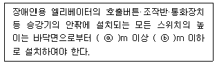
- ⓐ : 0.7, ⓑ : 1.2
- ⓐ : 0.8, ⓑ : 1.2
- ⓐ : 0.9, ⓑ : 1.5
- ⓐ : 1.0, ⓑ : 1.5
(정답률: 87%)
11. 블리드 오프 유압회로에서 카가 하강 시에 유압잭에서 기름 탱크로 되돌아가는 작동유의 유량을 제어하는 밸브는?
- 체크 밸브
- 릴리프 밸브
- 하강 유량 제어 밸브
- 상승 유량 제어 밸브
(정답률: 89%)
12. 다음 ( )의 내용으로 옳은 것은?
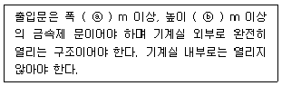
- ⓐ : 0.6, ⓑ : 1.7
- ⓐ : 0.6, ⓑ : 1.8
- ⓐ : 0.7, ⓑ : 1.7
- ⓐ : 0.7, ⓑ : 1.8
(정답률: 82%)
13. 자동차용 엘리베이터의 정격하중은 카의 면적 1m2당 몇 kg으로 계산한 값 이상인가?
- 100
- 150
- 200
- 250
(정답률: 81%)
14. 승객용 엘리베이터가 아닌 것은?
- 전망용 엘리베이터
- 비상용 엘리베이터
- 피난용 엘리베이터
- 자동차용 엘리베이터
(정답률: 94%)
15. 권상기의 트랙션 능력에 영향을 가장 적게 미치는 것은?
- 제동기 용량
- 주 로프의 권부각
- 카의 가속도, 감속도
- 주 로프와 도르래의 마찰계수
(정답률: 79%)
16. 카 비상정지장치의 작동을 위한 조속기는 정격속도의 최소 몇 % 이상의 속도에서 동작되어야 하는가?
- 115
- 110
- 1⑤
- 100
(정답률: 89%)
17. 승강장 도어가 닫혀있지 않으면 엘리베이터 운전이 불가능하도록 하는 것은?
- 도어 록
- 도어 슈
- 도어 행거
- 도어 스위치
(정답률: 79%)
18. 유회시설 중 회전운동을 하는 유희시설이 아닌 것은?
- 바이킹
- 비행탑
- 관람차
- 모노레일
(정답률: 90%)
19. 승강기의 교류 이단 속도 제어 순서로 가장 옳은 것은?
- 고속 출발 → 고속운전 → 정지
- 저속 출발 → 고속운전 → 정지
- 고속 출발 → 고속운전 → 저속 전환 → 정지
- 저속 출발 → 고속운전 → 저속 전환 → 정지
(정답률: 78%)
20. 다음 ( )의 내용으로 옳은 것은?
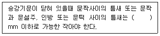
- 5
- 6
- 7
- 8
(정답률: 78%)
2과목: 승강기설계
21. 권상능력 또는 승강시키는 전동기의 힘을 충분히 확보하기 위해 현수로프의 무게를 보상하는 수단이 사용될 경우 적용되는 사항으로 정격속도가 몇 m/s를 초과하는 경우에는 추가로 튀어오름방지장치가 설치되어야 하는가?
- 3.5
- 4
- 4.5
- 5
(정답률: 72%)
22. 그림과 같이 전동기를 △결선으로 하기 위한 방법을 옳게 설명한 것은?
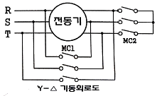
- MC1소자, MC2소자
- MC1소자, MC2여자
- MC1여자, MC2소자
- MC1여자, MC2여자
(정답률: 77%)
23. 인장강도가 4100kg/cm2이고 안전율이 5.2인 연강의 허용응력은 약 몇 kg/cm2 인가?
- 152
- 15.2
- 788
- 78.8
(정답률: 84%)
24. 엘리베이터 교통량 계산 시 필요한 요소가 아닌 것은?
- 엘리베이터의 대수
- 엘리베이터의 정격용량
- 엘리베이터의 제어방식
- 엘리베이터의 정격속도
(정답률: 72%)
25. 엘리베이터의 가이드 레일을 설치할 때 레일 브래킷의 간격을 좁게 하면 동일한 하중에 대하여 응력 및 휨은 어떻게 되는가?
- 응력과 휨 모두가 커진다.
- 응력과 휨 모두 작아진다.
- 응력은 작아지고 휨은 커진다.
- 응력은 커지고 휨은 작아진다.
(정답률: 78%)
26. 엘리베이터 기본시방의 내용으로 적합한 것은?
- 정격하중과 운전방식
- 전동기용량과 정격속도
- 정격속도와 정격하중
- 운전방식과 전동기용량
(정답률: 83%)
27. 다음 중 V 벨트의 특징으로 옳은 것은?
- 수명이 짧다.
- 미끄럼이 크다.
- 운전 소음이 크다.
- 전동 회전비가 크다.
(정답률: 69%)
28. 에스컬레이터의 배치를 계획할 때 고려 사항으로 가장 적합하지 않은 것은?
- 백화점에서는 가장 눈에 띄기 쉬운 위치에 배치한다.
- 건물의 전 수송설비를 중앙으로 모으는 방법도 사용된다.
- 일반적으로 출입구 가까운 곳에 엘리베이터와 같이 배치하는 것이 좋다.
- 각 층의 에스컬레이터 승강구의 관계유치는 연속된 움직임으로 승강할 수 있는 것이 바람직하다.
(정답률: 83%)
29. 압력 릴리프 밸브는 압력을 전 부하 압력의 몇%까지 제한하도록 맞추어 조절되어야 하는가?
- 100
- 115
- 125
- 140
(정답률: 81%)
30. 승강기 완성검사 시 각각의 전기가 통하는 전도체와 접지 사이를 측정하였을 때 공칭회로 전압이 500V 이하이고 시험전압(직류)이 500V인 경우 절연저항 값은 MΩ 이상인가?(2022년 03월 04일 확인된 규정 적용됨)
- 0.1
- 0.25
- 0.5
- 1.0
(정답률: 60%)
31. 최대 굽힘 모멘트가 900kg·cm이고, 단면계수가 4.5cm3인 재료의 최대 굽힘 응력(kg/cm2)은?
- 10
- 20
- 100
- 200
(정답률: 76%)
32. 카 자중 1200kg, 정격하중 1000kg인 엘리베이터의 오버밸런스율을 40%로 취하면 균형추의 중량은 몇 kg인가?
- 1480
- 1600
- 1720
- 1800
(정답률: 80%)
33. 기어식 권상기를 적용한 엘리베이터의 정격속도와 관련없는 것은?
- 전동기의 극수
- 감속기의 감속비
- 전동기 전원전압
- 권상기 도르래의 지름
(정답률: 65%)
34. 로프식 엘리베이터의 카 자중이 1200kg, 적재 하중이 1000kg, 행정거리가 50m, 1m당 로프의 무게가 0.6kg, 로프 가닥수가 5, 오버밸런스율이 0.45 라면 빈 카가 최상층에 있을 때 트랙션비는 약 얼마인가?
- 1.09
- 1.17
- 1.42
- 1.50
(정답률: 52%)
35. 비상용 엘리베이터는 정전 시 몇 초 이내에 엘리베이터 운행에 필요한 전력용량을 자동적으로 발생시켜야 하는가?
- 30
- 60
- 90
- 120
(정답률: 86%)
36. 가이드레일 규격이 아닌 것은?
- 8K
- 10K
- 13K
- 18K
(정답률: 88%)
37. 다음 중 승강기용 권상기의 주요 구성품이 아닌 것은?
- 전동기
- 감속기
- 제동기
- 과속 스위치
(정답률: 86%)
38. 에스컬레이터의 경사도가 30°, 적재하중이 2120kg, 속도가 30m/min인 경우 모터의 용량은 약 몇 kW인가? (단, 에스컬레이터 총효율은 0.6, 승객 승입율은 0.85 이다.)
- 8.4
- 7.4
- 6.4
- 5.4
(정답률: 70%)
39. 엘리베이터에 필요 없는 안전장치는?
- 인터록 장치
- 조속기 장치
- 비상정지 장치
- 핸드레일 안전장치
(정답률: 92%)
40. 엘리베이터에 있어서 대책을 요하는 재해의 종류로 볼 수 없는 것은?
- 고장
- 지진
- 화재
- 정전
(정답률: 88%)
3과목: 일반기계공학
41. 유압회로에서 유압 모터, 유압실린더 등의 작동순서를 순차적으로 제어하고자 할 때 사용하는 밸브는?
- 체크 밸브
- 릴리프 밸브
- 시퀀스 밸브
- 감압 밸브
(정답률: 86%)
42. 다음 중 기계 구조물을 콘크리트 바닥 등에 고정시키기 위해 사용되는 특수 볼트는?
- 아이 볼트
- 스테이 볼트
- 기초 볼트
- 나비 볼트
(정답률: 73%)
43. 제어밸브 중 방향제어밸브의 종류가 아닌 것은?
- 디셀러레이션 밸브
- 체크 밸브
- 셔틀 밸브
- 언로딩 밸브
(정답률: 60%)
44. 다음이 설명하는 용접법은?
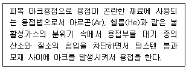
- 스터드 용접
- 서브머지드 아크 용접
- TIG 용접
- 테르밋 용접
(정답률: 72%)
45. 비틀림만을 받은 축에서 다른 조건은 같게 하고 축 지름을 2배로 늘리면 허용 토크는 몇 배 증가하는가?
- 2
- 4
- 8
- 16
(정답률: 57%)
46. 다음 중 알루미늄 합금이 아닌 것은?
- 실루민
- 라우탈
- 하이드로날륨
- 콘스탄탄
(정답률: 80%)
47. 지름 75mm의 엔드 밀 커터가 매 분 60 회전하며 절삭할 때 절삭 속도는 약 몇 m/min인가?
- 14
- 20
- 26
- 32
(정답률: 60%)
48. 철강재료 중 순철의 특징에 관한 설명으로 옳지 않은 것은?
- 단접성, 용접성은 좋지 않으나 유동성과 열처리성은 좋은 편이다.
- 상온에서 전연성이 풍부하고, 항복점, 인장강도 등이 낮다.
- 상온에서 강자성체이다.
- 기계구조용 재료로는 잘 사용되지 않고 전기재료로 많이 이용된다.
(정답률: 55%)
49. 다음 중 공기마이크로미터로 측정할 수 있는 항목으로 거리가 먼 것은?
- 안지름
- 테이퍼
- 진직도
- 표면거칠기
(정답률: 77%)
50. 다음 스프링 중 에너지를 축적하여 그 에너지를 이용하는 스프링은?
- 시계의 태엽 스프링
- 승강기의 완충 스프링
- 자동차의 현가 스프링
- 철도차량의 겹판 스프링
(정답률: 76%)
51. 강의 표면경화법에서 침탄법과 비교한 질화범의 특징 설명으로 틀린 것은?
- 질화법 적용 후에 열처리가 필요없다.
- 경화층이 얕으나 경도는 침탄한 것보다 크다.
- 질화법은 마모 및 부식에 대한 저항이 작다.
- 질화법은 변형이 적으나 경화시간이 많이 걸린다.
(정답률: 68%)
52. 다음 중 유압 작동유의 구비조건으로 거리가 먼 것은?
- 비압축성이어야 한다.
- 점도지수가 작아야 한다.
- 화학적으로 안정적이어야 한다.
- 열을 잘 방출할 수 있어야 한다.
(정답률: 67%)
53. 목형용 목재의 구비조건으로 옳지 않은 것은?
- 가공이 쉽고 표면이 매끄러울 것
- 재질이 균일할 것
- 수분과 수지의 함유량이 높을 것
- 합리적인 가격일 것
(정답률: 87%)
54. 사각형 단면의 단순 보 폭이 b = 25 cm, 높이는 h = 30 cm일 경우 단면계수(Z)는?
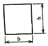
- 3750cm3
- 7500cm3
- 1875cm3
- 937.5cm3
(정답률: 59%)
55. 다음 중 회전운동을 직선운동으로 바꿀 때 사용되는 기어는?
- 헬리컬 기어
- 베벨 기어
- 래크와 피니언
- 스퍼 기어
(정답률: 77%)
56. 철도레일의 기온이 5℃에서 35℃까지 상승할 때 발생되는 열응력은 약 얼마인가? (단, 레일재료 선팽창 계수는 0.000011/℃이고, 세로탄성계수는 2.1×106N/cm2이다.)
- 793 N/cm2
- 693N/cm2
- 593N/cm2
- 493N/cm2
(정답률: 66%)
57. 가로 a, 세로 b인 직사각형의 단면을 갖는 봉이 하중 P를 받아 인장되었다. 이 봉에 작용한 인장응력을 구하는 식은?
- (a·b20)/P
- P/(a·b2)
- (a·b)/P
- P/(a·b)
(정답률: 62%)
58. 한쪽 또는 양쪽에 기울기를 갖는 평판 모양의 쐐기로서 인장력이나 압축력을 받는 2개의 축을 연결하는 기계요소를 무엇이라 하는가?
- 소켓
- 너클 핀
- 코터
- 커플링
(정답률: 82%)
59. 기본부하용량이 18000N인 볼 베어링이 베어링 하중을 2000N을 받고 150rpm으로 회전할 때 이 베어링의 수명은 약 몇 시간인가?
- 62000
- 71000
- 76000
- 81000
(정답률: 48%)
60. 소성가공을 할 때 열간가공과 냉간가공을 구분하는 온도가 가장 밀접한 것은?
- 임계 온도
- 재결정 온도
- 용융 온도
- 동소 변태 온도
(정답률: 86%)
4과목: 전기제어공학
61. 직류전동기의 회전 방향을 바꾸려면 어떻게 하는가?
- 입력단자의 극성을 바꾼다.
- 보극권선의 접속을 바꾼다.
- 브러시의 위치를 조정한다.
- 전기자권선의 접속을 바꾼다.
(정답률: 70%)
62. 변압기는 어떤 원리를 이용한 것인가?
- 정전 유도 작용
- 전자 유도 작용
- 전류의 발열 작용
- 전극의 화학 작용
(정답률: 79%)
63. 그림의 회로는 다이오드와 저항을 사용하여 무접점 논리 시퀀스 회로를 구성한 것이다. 이 회로는 어떤 논리소자의 역할을 하는가?
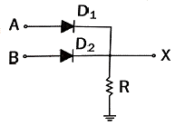
- OR
- AND
- NOT
- EX-OR
(정답률: 71%)
64. 기전력 2V, 용량 10Ah인 축전지 9개를 직렬로 연결하여 사용할 때의 용량은 몇 Ah인가?
- 10
- 90
- 100
- 180
(정답률: 65%)
65. 특성방정식 s2+2s+2=0을 갖는 2차계에서의 감쇠율 δ(damping ratio)는?
- √2
- 1/√2
- 1/2
- 2
(정답률: 73%)
66. 그림과 같은 유접점회로를 논리식으로 표현하면?
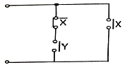
- X · Y
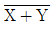
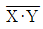
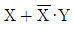
(정답률: 81%)
67. R-L-C 병렬회로가 병렬공진되었을 때 합성 임피던스의 크기와 합성 전류의 크기는?
- 임피던스와 전류 모두 최대가 된다.
- 임피던스와 전류 모두 최소가 된다.
- 임피던스는 최대, 전류는 최소가 된다.
- 임피던스는 최소, 전류는 최대가 된다.
(정답률: 70%)
68. PLC(Programmable Logic Controller)를 설치할 때 틀린 방법은?
- 배선공사 시 동력선과 신호케이블은 평행시키지 않도록 한다.
- 접지공사는 제1종 접지공사로 하고 다른 기기와 공용접지가 바람직하다.
- 잡음(Noise)대책의 일환으로 제어반의 배선은 실드케이블을 사용한다.
- 설치장소의 환경을 충분히 파악하여 온도, 습도, 진동, 충격 등에 주의하여야 한다.
(정답률: 76%)
69. 정전용량 C(F)의 콘덴서를 △결선해서 3상 전압V(V)를 가했을 때의 충전용량은 몇 VA인가? (단, 전원의 주파수는 f(Hz)이다.)
- 2πfCV2
- 6πfCV2
- 9πfCV2
- 18πfCV2
(정답률: 68%)
70. 그림에서 RC회로의 전달함수 G(jω)는?
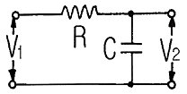
- jωCR
- 1/jωCR
- 1+jωCR
- 1/1+jωCR
(정답률: 57%)
71. 제어요소는 무엇으로 구성되는가?
- 피드백 동작부
- 입력부와 조절부
- 출력부와 검출부
- 조작부와 조절부
(정답률: 81%)
72. 그림과 같은 회로에서 전류 i를 나타낸 식은?
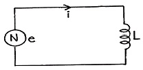
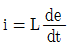
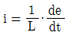
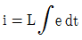
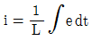
(정답률: 47%)
73. 그림과 같은 직류회로에서 전압계와 전류계를 접속하여 부하전력을 측정할 때 각각의 계기가 50V, 2A를 지시하였다. 전류계의 내부저항이 0.5Ω이라면 부하전력은 몇 W인가?
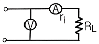
- 90
- 98
- 100
- 102
(정답률: 60%)
74. 그림과 같은 제어에 해당하는 것은?
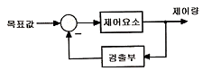
- 개방 제어
- 개루프 제어
- 시퀀스 제어
- 폐루프 제어
(정답률: 82%)
75. 다음 중 서보기구에 속하는 제어량은?
- 전압
- 위치
- 압력
- 회전속도
(정답률: 85%)
76. 스트레인 게이지(Strain Gauge)의 센서는 무엇의 변화량을 측정하는 것인가?
- 저항
- 정전용량
- 인덕턴스
- 마이크로파
(정답률: 69%)
77. 그림과 같은 병렬공진회에서 전류 I가 전압 E 보다 앞서는 관계로 옳은 것은?
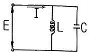
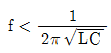
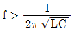
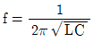
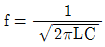
(정답률: 76%)
78. 열차의 무인운전이나 열처리로의 온도제어는?
- 정치 제어
- 추종 제어
- 비율 제어
- 프로그램 제어
(정답률: 87%)
79. 출력기구에 속하지 않은 것은?
- 표시 램프
- 전자 개폐기
- 리밋 스위치
- 솔레노이드
(정답률: 71%)
80. 유도전동기의 회전자가 슬립 S로 회전하고 있을 때 고정자 및 회전자의 실효 권수비를 α라 하면, 고정자 기전력 E1과 회전자 기전력 E2와의 비는 어떻게 표현되는가?
- α/S
- Sα
- α/1-S
- (1-S)α
(정답률: 48%)